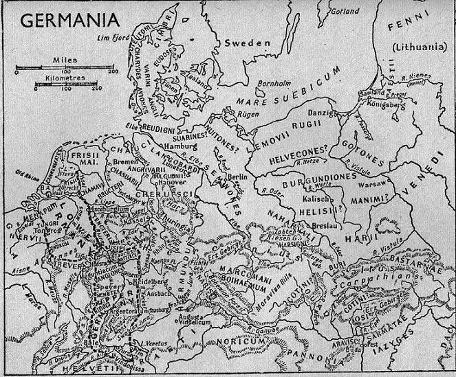

Welcome to the barely hidden hidden page. For those of you who haven't read Tacitus, look at the top right hand corner. Then read this:
"Fennis mira feritas, foeda paupertas: non arma, non equi, non penates; victui herba, vestitui pelles, cubile humus: solae in sagittis spes, quas inopia ferri ossibus asperant. idemque venatus viros pariter ac feminas alit; passim enim comitantur partemque praedae petunt. nec aliud infantibus ferarum imbriumque suffugium quam ut in aliquo ramorum nexu contegantur; huc redeunt iuvenes, hoc senum receptaculum. sed beatius arbitrantur quam ingemere agris, inlaborare domibus, suas alienasque fortunas spe metuque versare: securi adversus homines, securi adversus deos rem difficillimam adsecuti sunt, ut illis ne voto quidem opus esset."
Fenni is pretty close, anyway. I don't mind.